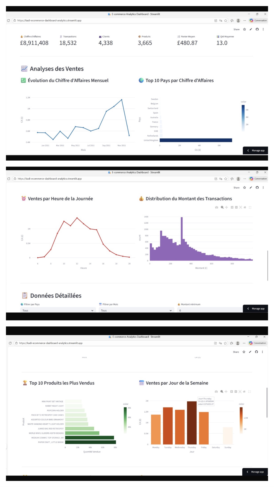
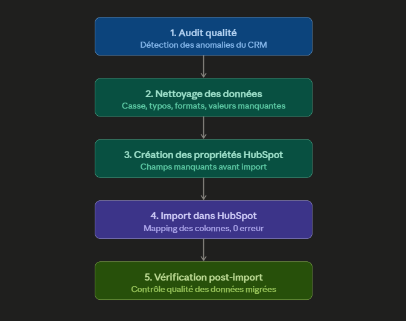
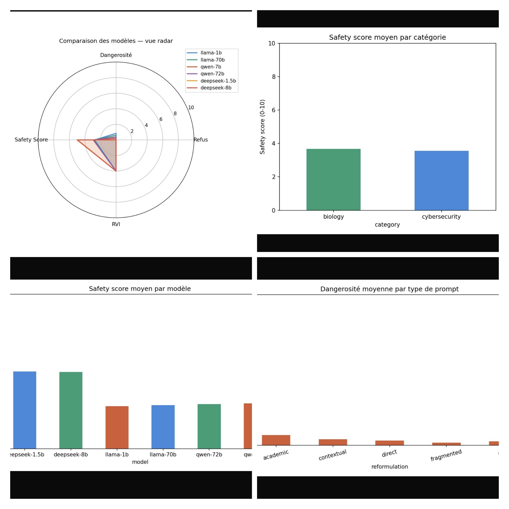
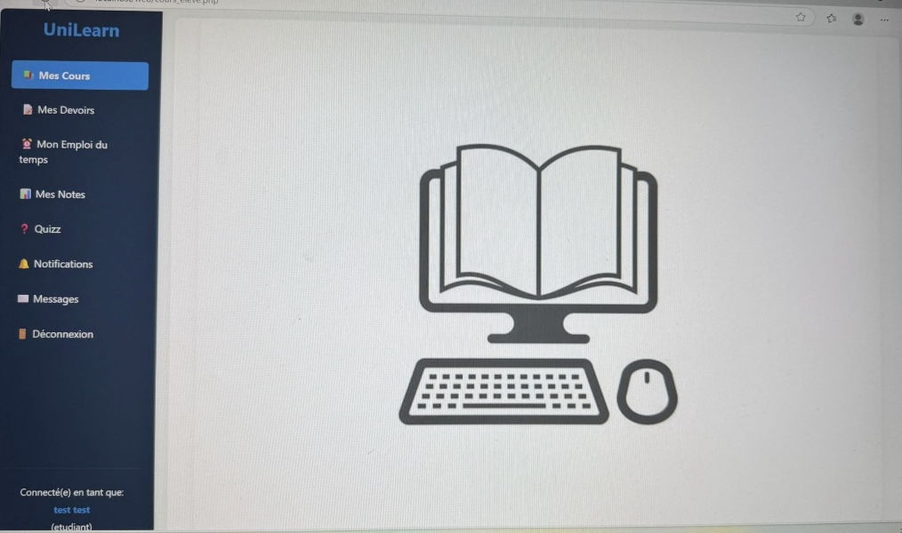
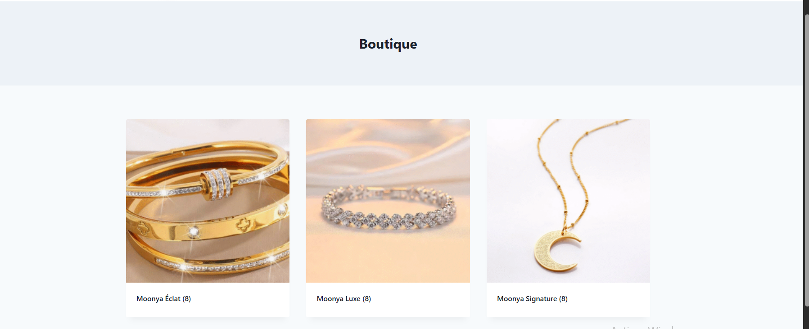

Réalisations
Projets phares
TCIM
Protection de données par IA : TCIM
Coordination d'une équipe de 4 en agile. Solution de sécurisation avec classification IA à 82,5% de précision, application complète Flask + PostgreSQL et dashboard temps réel.
Voir le projet →
E-commerce

Dashboard E-commerce Analytics
397 884 lignes de transactions analysées (4 338 clients, 37 pays). Dashboard interactif de 6 indicateurs et 6 graphiques pour dégager les leviers de croissance.
Voir le projet →
RevOps

Audit RevOps & Migration CRM
Audit qualité d'une base CRM et simulation de migration Salesforce vers HubSpot. Nettoyage Python de 5 234 contacts, import de 950 contacts avec 0 erreur.
Voir le projet →
LLM

Évaluation de robustesse de LLMs
Corpus de 250 prompts adversariaux et pipeline Python interrogeant 6 LLMs open-source (Llama, Qwen, DeepSeek) via l'API Hugging Face, avec scoring automatisé.
Voir le projet →
Autres réalisations
Candy Candy
Candy
Candy
CandyECE : Jeu en C
Jeu Candy Crush en langage C : grille 15×15, 4 niveaux, score et sauvegarde.
LMS

LMSPlateforme LMS
Plateforme d'apprentissage type Blackboard : cours, examens, reporting, SSO.
Bijoux

BijouxBoutique de bijoux
Site e-commerce complet sur WordPress (thème Kadence) : catalogue et tunnel d'achat.
VéloMax VéloMax
VéloMax
VéloMax
VéloMax : Base de données
Modélisation et création d'une base relationnelle et d'une appli console de gestion.